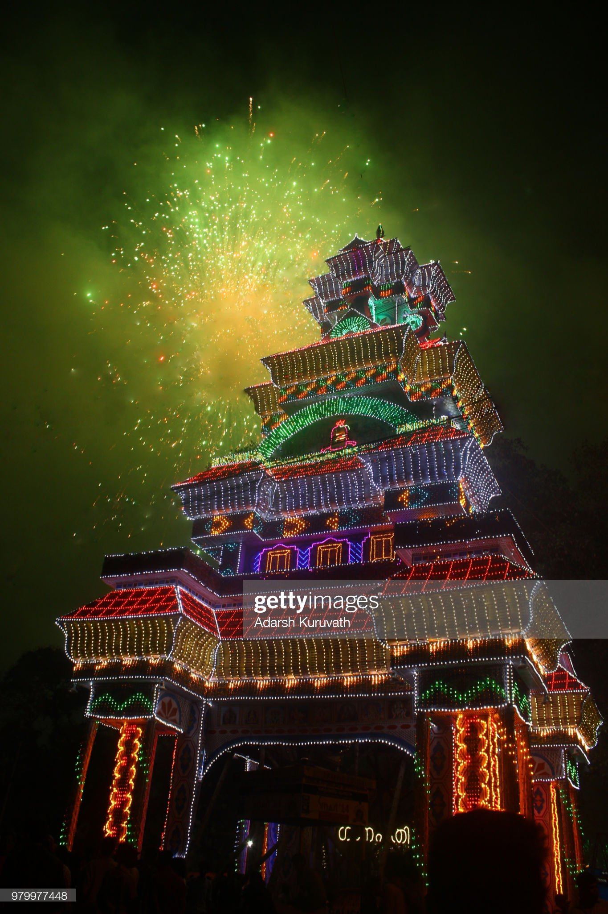

Thrissur pooram main fireworks (vedikettu / വെടിക്കെട്ട് ) are well renowned all over the country.
This amazing display of fireworks is held in the heart of Thrissur city, in Thekkinkadu Maidan.
Thiruvambadi and Parmekavu are the main participants in this event.

fireworks
Another attraction of the Puram is the fireworks that take place before
dawn the next day.